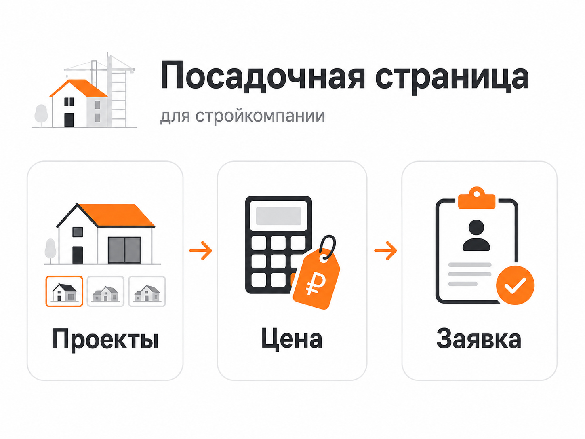
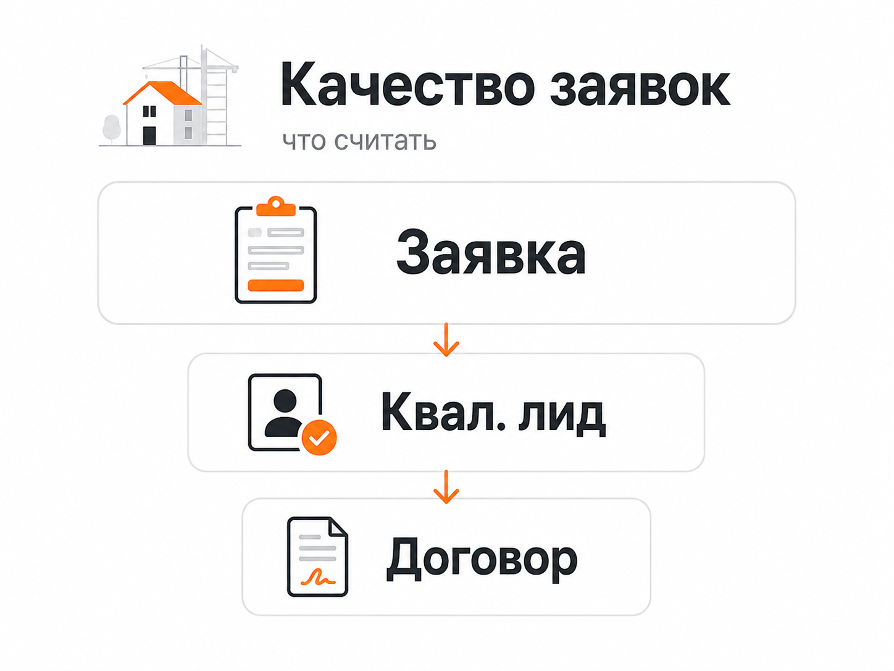

Блог о платном трафике
Яндекс Директ для строительной компании: как получать заявки на строительство
Яндекс Директ для строительной компании имеет смысл использовать прежде всего для привлечения людей, которые уже выбирают подрядчика, сравнивают технологии строительства, проекты, цены и условия. Но запуск рекламы только по запросам вроде «строительство домов под ключ» обычно недостаточен.
В строительстве результат зависит от всей связки: спроса, рекламных кампаний, предложения на сайте, портфолио, аналитики и работы отдела продаж. Поэтому я оцениваю такую рекламу не только по стоимости заявки, а по количеству квалифицированных обращений, встреч, расчетов сметы и договоров.
Какие задачи решает Яндекс Директ в строительстве
Директ позволяет работать с аудиторией на разных этапах выбора подрядчика.
На поиске можно перехватывать уже сформированный спрос. Например, человек ищет:
- строительство дома под ключ;
- построить дом из газобетона;
- строительство каркасного дома;
- строительная компания в конкретном городе или районе;
- стоимость строительства дома;
- подрядчик на строительство коттеджа.
РСЯ позволяет дополнительно работать с пользователями, которые интересуются строительством, посещают тематические сайты или уже были на сайте компании.
Для строительства это особенно полезно из-за длинного периода выбора. Заказчик редко принимает решение после первого посещения сайта. Он смотрит проекты, сравнивает технологии, изучает сметы, отзывы и выполненные объекты.
Подробнее о механике сетевой рекламы я писал в материале «Что такое РСЯ в Яндекс Директ».
Рекламу нужно разделять по направлениям строительства
Одна из распространенных ошибок - рекламировать все услуги строительной компании одной группой объявлений и вести весь трафик на главную страницу.
Если компания занимается несколькими направлениями, спрос лучше разделять.
Например:
| Направление | Что может искать клиент |
|---|---|
| Строительство домов под ключ | построить дом, строительство дома под ключ |
| Газобетон | дом из газобетона под ключ, строительство газобетонного дома |
| Каркасные дома | заказать каркасный дом, каркасный дом под ключ |
| Фундамент | строительство фундамента, фундамент под дом |
| Проектирование | заказать проект дома, проектирование частного дома |
| Коммерческое строительство | строительство коммерческого здания, подрядчик на строительство объекта |
Так проще связывать запрос, объявление и конкретное предложение на сайте.
Человек, который хочет построить каркасный дом, должен увидеть информацию именно о каркасных домах: проекты, фотографии построенных объектов, варианты комплектаций, сроки, порядок работы и форму расчета стоимости.
Какие кампании использовать
В актуальном Яндекс Директе основным инструментом для детального управления рекламой является Единая перфоманс-кампания. В ней можно настраивать показы на Поиске, в РСЯ и других доступных местах размещения, разделять аудитории по группам и использовать разные условия таргетинга.
Для строительной компании я бы не пытался сразу создавать десятки мелких кампаний. Лучше собрать структуру, в которой алгоритмы получают достаточно данных.
Поиск
Поиск в первую очередь нужен для сформированного спроса.
На старте я бы отдельно анализировал:
- прямые запросы на строительство;
- запросы по технологиям и материалам;
- запросы с указанием цены;
- запросы «под ключ»;
- геозависимый спрос;
- запросы по конкретным типам объектов.
После запуска нужно регулярно смотреть реальные поисковые запросы. Автотаргетинг сегодня способен давать заметную часть трафика, поэтому одного первоначального списка ключевых фраз недостаточно.
Общий подход к современной настройке я подробно разобрал в статье «Как настроить рекламу в Яндекс Директ в 2026 году».
РСЯ
РСЯ может расширять объем обращений и возвращать пользователей, которые уже познакомились с компанией.
Для строительной тематики особенно важны визуальные материалы. Вместо абстрактных картинок лучше использовать реальные построенные дома, отдельные проекты, фасады, интерьеры или процесс строительства.
Объявление должно быстро показывать, что именно строит компания и чем ее предложение отличается от десятков похожих подрядчиков.
Посадочная страница влияет на результат не меньше рекламы

Можно хорошо настроить Директ и все равно получать дорогие заявки, если человек после клика попадает на слабый сайт.
Страница строительной компании должна быстро отвечать на основные вопросы потенциального клиента:
- какие объекты вы строите;
- в каких регионах работаете;
- какие технологии используете;
- какие проекты уже реализованы;
- сколько примерно стоит строительство или от чего зависит цена;
- что входит в комплектацию;
- как проходит работа;
- какие гарантии предоставляются;
- как получить расчет.
Особенно важны реальные фотографии объектов. В строительстве портфолио одновременно подтверждает опыт компании и помогает человеку представить будущий результат.
Если направлений много, необязательно разрабатывать отдельный сайт для каждого. Можно создавать отдельные посадочные страницы внутри существующего сайта.
Подробнее о требованиях к рекламной странице: «Что такое лендинг в Яндекс Директе и какой сайт выбрать для рекламы».
Практическую пользу такого разделения хорошо видно в моем кейсе по trade-in недвижимости. Это другая ниша, но похожая ситуация с дорогим продуктом и длительным выбором. Вместо многостраничного SEO-сайта рекламный трафик направили на отдельный лендинг и квиз. В результате заявки обходились примерно в 1500-2007 ₽, а квалифицированные обращения - в 1915-3010 ₽.
Для строительства принцип тот же: реклама должна приводить человека не просто «на сайт компании», а к максимально релевантному предложению.
Не все заявки из Директа одинаково полезны

Для строительной компании стоимость обычной формы на сайте сама по себе мало что показывает.
Можно получать много дешевых обращений от людей, которые:
- еще не имеют участка;
- не определились с бюджетом;
- ищут только бесплатный расчет;
- рассматривают строительство через несколько лет;
- находятся вне рабочей географии;
- рассчитывают на стоимость, с которой компания не работает.
Поэтому полезно разделять хотя бы три уровня:
- Все обращения.
- Квалифицированные лиды.
- Продажи или подписанные договоры.
Именно между этими уровнями часто становится понятно, действительно ли реклама работает.
Похожая ситуация была в моем кейсе по коммерческой недвижимости в ЖК «Ватутинки Парк». После изменения рекламной связки и квиз-воронки стоимость обращения снизилась примерно с 6000 ₽ до 1700 ₽. При этом отдельно контролировалось качество: в одном из периодов квалифицированными оказались 10 из 12 лидов.
Для строительной компании такая оценка еще важнее, потому что цена договора значительно выше цены заявки, а цикл сделки может включать несколько контактов с менеджером.
Метрика, звонки и CRM должны работать вместе
Перед запуском рекламы нужно настроить Яндекс Метрику и основные цели:
- отправку формы;
- отправку квиза;
- звонок;
- обращение через доступные на сайте каналы связи;
- другие действия, которые действительно обозначают интерес клиента.
Если значительная часть сделки происходит уже после заявки, полезно возвращать данные из CRM обратно в аналитику.
Яндекс позволяет передавать офлайн-конверсии и использовать их для анализа и оптимизации рекламы. Например, можно учитывать не только первоначальную форму, но и дальнейший статус клиента.
Это позволяет постепенно учить алгоритм искать не пользователей, которые охотнее всего заполняют форму, а аудиторию, похожую на более ценные для бизнеса обращения.
Необходимость учитывать все способы связи хорошо видна в моем кейсе проекта с высоким чеком. По стандартным отслеживаемым целям заявка выглядела как 4000-4200 ₽. После учета дополнительных форм, виджета и обращений через мессенджер фактическая стоимость обращения была около 2500 ₽.
Если в строительной компании часть клиентов звонит, пишет менеджеру или возвращается через несколько дней, оценка только форм с сайта будет давать такую же искаженную картину.
Как выбирать стратегию
В Директе доступны автоматические стратегии, ориентированные в том числе на получение конверсий. Яндекс рекомендует оценивать performance-рекламу по действиям клиентов и результату бизнеса, а не только по количеству переходов.
Если накоплена нормальная статистика по обращениям, основной целью можно делать заявку или более глубокую конверсию.
Если данных мало, не стоит искусственно ограничивать кампании десятками узких сегментов. Алгоритмам необходим объем статистики.
Я подробно разбирал варианты стратегий в материале «Какую стратегию выбрать в Яндекс Директ».
Как рассчитать рекламный бюджет
Универсальной стоимости рекламы строительной компании нет.
Цена зависит от:
- региона;
- направления строительства;
- конкуренции;
- объема поискового спроса;
- качества сайта;
- среднего чека;
- конверсии отдела продаж;
- допустимой стоимости привлечения клиента.
Поэтому начинать расчет лучше не со средней цены клика в нише, а с экономики компании.
Допустимая стоимость заявки связана с тем, сколько бизнес готов потратить на получение одного договора и какая доля квалифицированных лидов превращается в клиентов.
Если компания может привлекать продажу за определенную сумму, а из десяти квалифицированных обращений в среднем заключается один договор, из этой воронки уже можно получить ориентир по допустимой стоимости квалифицированного лида.
Именно этот показатель затем нужно сравнивать с фактическими данными Директа.
Что чаще всего мешает получать нормальные заявки
Весь трафик ведут на главную
Пользователю приходится самостоятельно искать интересующую технологию, проекты и цены.
Оптимизируют рекламу на слишком простую цель
Алгоритм может находить дешевые отправки формы, которые отдел продаж считает мусорными.
Не отслеживают телефонные обращения
В строительстве звонок часто является важным способом первого контакта. Если его не учитывать, часть результата рекламы просто исчезает из статистики.
Смешивают разные услуги
Строительство домов, ремонт, фундамент и проектирование могут иметь совершенно разную аудиторию и экономику.
Оценивают объявления по CTR
Высокая кликабельность сама по себе не означает, что реклама приводит потенциальных заказчиков.
Слишком часто меняют кампании
Автоматическим стратегиям требуется статистика. Постоянная смена целей, бюджета, структуры и стратегии мешает объективно сравнивать результаты.
Если реклама уже работает, но результаты вызывают вопросы, полезно пройтись по основным точкам проверки из моего материала «Аудит Яндекс Директ».
Как я бы запускал Яндекс Директ для строительной компании
Последовательность выглядела бы так:
- Разделить основные направления и определить наиболее маржинальные услуги.
- Проверить посадочные страницы и подготовить отдельные страницы под важные сегменты.
- Настроить Метрику, формы, звонки и передачу заявок в CRM.
- Запустить рекламу по наиболее горячему сформированному спросу.
- Проанализировать реальные поисковые запросы и работу автотаргетинга.
- Подключить РСЯ и повторные касания с посетителями сайта.
- Разделять обычные заявки и квалифицированные обращения.
- Передавать в аналитику более глубокие этапы воронки.
- Перераспределять бюджет в пользу направлений, которые дают не просто лиды, а потенциальные договоры.
Главная задача рекламы строительной компании - не получить максимальное число форм по минимальной цене. Нужно выстроить систему, в которой Яндекс Директ стабильно приводит людей, подходящих компании по типу объекта, географии, бюджету и срокам строительства.
FAQ
Подходит ли Яндекс Директ для строительства домов?
Да, особенно для работы со сформированным поисковым спросом. Пользователь уже ищет подрядчика, конкретную технологию строительства или стоимость работ, поэтому рекламу можно показывать в момент выбора компании.
Что лучше для строительной компании - Поиск или РСЯ?
На Поиске пользователь сам формулирует потребность, поэтому с него удобно начинать работу с горячим спросом. РСЯ позволяет расширять охват и повторно взаимодействовать с людьми во время длительного выбора подрядчика. Итоговое решение нужно принимать по стоимости и качеству лидов.
Нужен ли отдельный лендинг?
Не обязательно делать отдельный сайт, но для ключевых направлений полезны отдельные посадочные страницы. Объявление о строительстве дома из газобетона должно вести на страницу про газобетонные дома, а не на общий каталог всех услуг.
Как понять, что реклама работает?
Смотреть нужно не только на клики и количество форм. Для строительной компании основными показателями должны становиться квалифицированные лиды, их стоимость, последующие расчеты, встречи и заключенные договоры.